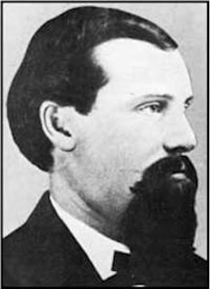

For months, Ada County Sheriff David Updyke had been investigating a secretive group of armed extremists living at the periphery of his southwest Idaho jurisdiction. When an informant provided him with a membership list of the armed band, Updyke wasted no time. He obtained arrest warrants, organized a large, heavily armed strike force, and made a beeline for the Payette River Valley.
The warrants were a ruse. Updyke wasn't planning a mass arrest; he was plotting a massacre. His quarry was a group of about two dozen law-abiding citizens who had organized a private "Vigilance Committee" under the leadership of an equable local farmer named William J. McConnell.
| William J. McConnell |

Some of the Vigilantes had welcomed Updyke's election as Ada County's first sheriff in 1864, only to discover in short order that he was a predator, rather than a peace officer. Historian Randy Stapilus summarizes the matter quite tidily in his slender but fascinating book Outlaw Tales of Idaho: Ada County's new sheriff "was moonlighting as a stage robber."
Updyke's inspiration was Henry Plummer, a New England native who carved out a criminal career that spanned several states and ran up a fairly sizeable body count. Swept into northern California just as the gold rush was waning, Plummer -- who was blessed with glibness and a certain facile charm -- was elected a town marshal.
After gunning down two men for no defensible reason, Plummer spent a few years in San Quentin before being paroled and exiled from the state. News of mining opportunities in northern Idaho sent Plummer to Lewiston, which at the time was Idaho's territorial capital. He quickly fell into the company of thieves and rustlers and did a pretty brisk business in robbery until he was forced to flee to Bannack, Montana, where he once again sought out the company of the local criminal element.
Following a brief flirtation with local politics, Plummer found more honest work as a pimp. His business partner was a prostitute posing as his wife. This was a profitable arrangement until Plummer and his "wife," while visiting a saloon, encountered a man named Cleveland who knew of the ex-convict's dealings in California. Within a few days Plummer had killed Cleveland and forced the sheriff to flee, creating a vacancy he eagerly filled.
Plummer moved with dispatch to make the most of his new position. As sheriff he was provided with detailed information about local ex-cons and criminal suspects, whom he treated as potential recruits for his road agent syndicate. He also was able to gather intelligence on potential victims. He used those assets to great advantage in arranging the October 1863 robbery-murder of Lewiston dry goods dealer Lloyd Magruder, who was one of five members of a pack train slaughtered by a team of Plummer's road agents at a camp in the Bitteroot Mountains.
Magruder, who had made the trek from Lewiston to Bannack in order to sell goods to miners in Montana, made the fatal mistake of hiring some local help for the return trip. Plummer, who was aware that Magruder was headed back to Idaho with a large quantity of money, arranged for several of his thugs to hire on with the merchant. The robbers made off with an estimated $18,000 in gold dust.
A few months later, a well-respected young rancher named Nicholas Thiebalt was murdered during another robbery carried out by a road agent gang. Puzzled and infuriated by the sheriff's apparent indifference to the onslaught, local ranchers created a Vigilance Committee and set out to find and punish the robbers. One of the perpetrators, a man named Erastus Yeager, informed the Vigilantes that Sheriff Plummer was actually the kingpin of the criminal syndicate.
In January 1864 -- seven months after the road agent gang had begun its depredations --- Sheriff Plummer was marched up the steps of a scaffold he had built himself. Just before the noose was put around his neck, Plummer reportedly made a desperate final offer to the Vigilantes: "Give me two hours and a horse. I can bring back my weight in gold." He wasn't given the opportunity.
Sheriff Plummer's history is worth reviewing, since it eerily prefigured the career of Sheriff Updyke. While Plummer was busy organizing a criminal syndicate in Montana, his former colleagues in Lewiston drifted south. Once it had oozed its way into Boise, Plummer's old gang quickly congealed into a political elite.
Boise City, as it was called, was a fair approximation of Mos Isley Spaceport. In their book Gold Rushes and Mining Camps of the Early American West, historians Vardis Fisher and Opal Laurel Holmes describe the town as being in thrall to "a splendid assortment of murderers, robbers and tinhorn gamblers ... the offscourings of all the abandoned and worn-out mining camps in the Territory...." In other words, it had all the necessary ingredients to create the engine of misery called a "government."
 |
| Henry Plummer |

As Augustine pointed out long ago, a "government" is simply a gang that "acquires territory, establishes a base, captures cities and subdues peoples," and then obtains supposed respectability "not by the renouncing of aggression but by the attainment of impunity."
In 1864, Plummer's old criminal syndicate followed that time-honored formula with admirable fidelity by taking control of Boise's Democratic Party apparatus and electing David Updyke to be Ada County's first Sheriff.
Prior to the advent of state-imposed "civilization" in southwestern Idaho, crimes against persons and property were an occasional problem. The arrival of government law enforcement resulted in a tsunami-magnitude crime wave.
Armed robbers, operating out of Updyke's livery stable and under his protection, preyed on stage coaches and plundered local farms. The syndicate also defrauded local merchants and businessmen by passing bogus gold dust -- lead shavings covered with a thin layer of gold. This racket was, in some ways, a frontier-era foreshadowing of the officially sanctioned counterfeiting carried on today by the Federal Reserve System: The gold dust fraud ring enjoyed the protection of the "legitimate" government, which profited from its crimes.
William McConnell was among those who initially welcomed the arrival of "legitimate" law enforcement. His opinion changed abruptly after a horse that was stolen from his materialized in Updyke's stable. McConnell was forced to hire an attorney and spend two days in court to retrieve his stolen property, spending more in legal fees than the market value of his horse.
As a weary and frustrated McConnell departed the courtroom, a gang of Updyke's "Roughs" taunted the mild-mannered farmer. His patience finally exhausted, McConnell confronted the gangsters and warned them that the next time one of his horses went missing, he would track down the thief and "there will be no lawsuit about it."
A few days later, McConnell and two neighbors discovered that five horses and four mules -- livestock worth more than two thousand pre-Federal Reserve dollars -- were missing. McConnell and his neighbors took off in pursuit of the rustlers, returning two weeks later with the missing animals and a few honorably earned battle scars. This was, for all intents and purposes, the Payette Vigilance Committee's first campaign.
Updyke continued to abet armed robbery and shelter criminals. He refused to investigate crimes plausibly suspected to be the work of his political confederates. Practically the only attention law-abiding people received from their local sheriff was when he or his deputies would pay a visit to collect taxes -- a form of "legal" theft used to underwrite the local government's clandestine crimes.
As Albert Jay Nock pointed out in his definitive work Our Enemy, the State, government doesn't seek to abolish or suppress crime, but rather "claims and exercises [a] monopoly of crime .... [and] it makes this monopoly as strict as it can." In principle, this means that the government must also claim a monopoly on the use of force, and treat as criminals anyone who would undermine that monopoly. This is why the most urgent priority for the Ada County Sheriff's Department was to eliminate McConnell's Vigilance Committee, once the identity of its leader became known.
Updyke's crack-down was "to be conducted in legal form," observed Nathaniel P. Longford in his 1890 account Vigilante Days and Ways. However, "in making the arrest, Updyke and his posse proposed to shoot the leaders of the Vigilantes and screen themselves under the plea that they had resisted."
Thus it was that Updyke gathered a posse composed of "fifteen of the worst men in the Territory" and headed to Horseshoe Bend, where they were to join with another group similar in size and identical in composition before heading to the Payette River settlement.
Sheriff Updyke's plan may have succeeded were it not for two critical developments. First, a Boise resident sympathetic to the Vigilantes learned of the plot: While Updyke's posse took a longer route to join up with reinforcements at Horseshoe Bend, the Vigilante sympathizer raced ahead to warn McConnell. Secondly, Updyke's would-be allies in Horseshoe Bend failed to materialize.
Thus when the Sheriff and his gang arrived at Payette River, they had lost the advantage of surprise and were outnumbered at least two-to-one. The surprised and frustrated sheriff was forced to parley with McConnell, and "was obliged to comply with all the terms prescribed by the Vigilantes," records Longford.
| "City of Rocks," near the scene of the Portneuf massacre. |

A few months after the debacle in Payette River, a stagecoach bound from Montana to Utah was ambushed by a gang of "road agents" in southeast Idaho's Portneuf Canyon. Five passengers were murdered, and $86,000 in gold was taken from the coach. Stage driver Charlie Parks and a passenger who survived the attack made their way to Boise, where they another positively identified Updyke and a "Rough" named Brockie Jack as two of the robbers. Neither was ever prosecuted for the crime, and the gold -- which was marked and numbered -- was never found.
The Portneuf heist was Updyke's swan song as a career criminal. The same County Commission that had appointed Updyke moved to expel him. While they were motivated, at least in part, by a desire to placate an infuriated public, the commissioners -- who belonged to the same criminal band -- were probably more enraged that Updyke had been skimming from their take by keeping roughly $11,000 in tax revenues for himself.
Updyke soon found himself behind bars, in the custody of the newly elected sheriff, John Duvall. After Updyke bailed himself out, allies on the County Commission arranged for one of his criminal cronies, a deputy named William West, to be appointed interim sheriff until the end of the year.
In February 1866, a conflict with local Indian tribes presented Updyke with another career opportunity: His old road agent network re-constituted itself as a "militia" and elected Updyke its "captain." Backed by the "full faith and credit" of the local government, Updyke's militia purchased horses and supplies on credit. By April, the crisis had passed without this valiant band of heroes seeing action.
"The expedition ran its course, and, like all expeditions of the kind, was barren of any marked results," reports Langford's history. Just as he had been reticent to remit the taxes he had collected as Ada County Sheriff, Updyke wasn't eager to return the supplies he had requisitioned for his militia; accordingly, he "cached a large portion of the stores on the Snake River for future use of his road agent band."
One of the men who had sold horses to Updyke sued him for non-payment. During the trial, one of Updyke's lieutenants, a young man named Ruben Raymond, admitted under oath that the "militia" was simply a front for Updyke's criminal band. Within a few hours Raymond was murdered by one of Updyke's loyal henchmen, a man named John Clark.
Unfortunately for Updyke, the sheriff's office was no longer occupied by his erstwhile comrade William West: John Duvall had begun his term a few weeks earlier, and since he owed no loyalty to the Updyke gang he couldn't see any reason not to keep Clark behind bars until he could be tried for murder. Things were going very badly for Updyke, who couldn't resist making matters just a bit worse by openly threatening to go on a murderous rampage if Clark wasn't released.
Rather than being freed, Clark -- or what was left of him -- was soon seen dangling from a gibbet constructed on the future site of the Idaho State Capitol Building. Worried about what Clark might have disclosed to Sheriff Duvall before being dispatched to eternity, Updyke fled Boise in the company of an ally named Jake Dixon.
For several weeks Updyke and Dixon were pursued by the Payette Vigilantes, who eventually overtook them in a cabin near Syrup Creek on the western slope of the Sawtooth Mountains. The following day their bodies were found swinging from a makeshift gallows.
A notice pinned to Updyke's clothing announced that the Vigilance Committee had tried the former sheriff and found him guilty of being an accessory and accomplice to numerous murders and robberies (including the Portneuf stage robbery) and of "aiding and assisting" murderers and other criminals while serving as Ada County Sheriff.
Unlike a government agency, the Vigilance Committee didn't seek out new rationales for its continued existence. Updyke's demise had a chastening effect on the criminal oligarchy that had propelled him into office. Once government-sponsored crime abated, the Vigilantes disbanded. After Idaho became a state in 1890, McConnell was chosen to represent the Gem State in the U.S. Senate. He was later elected the state's third governor. In 1895, McConnell's daughter Mamie married future senator William Borah.
For those who understand the moral superiority of society's non-coercive sector, McConnell's political career is a bittersweet coda. His most valuable public service came as a nominal outlaw who employed defensive violence in order to protect life, liberty, and property from the criminal onslaught of the territory's "legitimate" government.
Like its counterparts in Montana and elsewhere, the Payette Vigilance Committee was representative of the private "protective agencies" created by settlers, miners, and ranchers during the westward expansion to protect property rights and settle disputes.
Admittedly, vigilante action, like any kind of applied violence, is problematic. As Dr. Thomas DiLorenzo points out in a recent essay for The Independent Review, one advantage of private protective agencies is that, unlike government entities, they don't claim "a legal monopoly on keeping order." Most frontier-era groups of this kind -- McConnell's Payette Vigilantes among them -- were created to confront criminal gangs who had been granted a limited franchise within that government monopoly.
"One of the most pejorative terms one can use in reference to law and self-defense is `vigilante," notes Dr. William L. Anderson, who teaches economics at Maryland's Frostburg State University. "Indeed, if one is called a vigilante, it is tantamount to being declared a criminal. Public officials, newscasters, and those in law enforcement solemnly tell us `there is no room in this country for vigilante justice.' Instead, we must wait for the `justice system' to work, and if it doesn't, well, that is simply a price we pay for having a free society."
However, continues Dr. Anderson, "the so-called threat from vigilante justice is like the threat we face from private companies delivering the mail or from home schooling: it undermines an established government monopoly."
The innate danger posed by vigilantism is the temptation to dispense with the non-aggression principle and engage in "preemptive" action. This is why some Vigilante groups -- among them elements of Montana's Vigilance Committee -- ended up being assimilated into the the state's apparatus of official coercion.

The November 1879 murder of Helena shopkeeper John Denn inspired the creation of a subterranean Vigilante group. Its identifying sign was the cryptic inscription "3-7-77," which began to appear on fences and walls around the city.
Unlike the Vigilantes of 1864, those who organized in 1879 didn't focus on redressing officially sanctioned crimes; instead, they harassed and intimidated people suspected of being "bad elements," often using their enigmatic signature as a notice of banishment.
Given that this latter vigilante group was little more than a gang of sanctimonious, opportunistic bullies, it's entirely appropriate that the legend "3-7-77" has been incorporated into the insignia of the Montana Highway Patrol.
Honorable and peaceful men like William McConnell were driven to vigilante action by the besetting corruption and criminal aggression of the government that presumed to rule them. Henry Plummer and David Updyke each ruled over a criminal fiefdom that was in many ways a microcosm of the malignant Robber State afflicting us today. To cite merely the most obvious example: The "road agents" employed by those "rogue sheriffs" are unmistakably the ancestors of the paramilitary "forfeiture gangs" employed by police agencies to plunder motorists and property owners today.
Many of the State's agents of wealth extraction are dispensing with any pretense that they are involved in protecting and serving the public. Modern analogues of Henry Plummer and David Updyke abound. It's not difficult to imagine circumstances in which the heirs of William McConnell would make their presence known as well.
Update: As If To Illustrate My Point ....
Police in Aurora, Illinois "forfeited" -- that is, stole under the supposed authority of "law" -- a total of $190,000 from residents Jose and Jesus Martinez on the pretext of a narcotics investigation. Neither of the brothers has a criminal record of any kind, and there is no evidence that they were involved in drug trafficking or possession.
Officers working with a "road agent" syndicate called the North Central Narcotics Task Force had tapped the brothers' home telephone, and were keeping them under surveillance as drug suspects. The actual robbery took place when Jesus, during a traffic stop, made the mistake of consenting to a search of his vehicle. No drugs were found, but the police seized the cash and gave Jesus a worthless receipt. Within hours the stolen money had been turned over to the task force, which in turn delivered it into the hands of the Cheka (aka the Department of Homeland Security).
Laundering the money in this fashion allows the police -- which will get a large cut, thanks to the federal "equitable sharing" racket -- to defy a court order demanding that it be returned to its owners.
Your donations help keep Pro Libertate on-line. Thanks, and God bless!
Dum spiro, pugno!
18 comments:
McConnell and two neighbors discovered that five horses and four mules – livestock worth more than two thousand pre-Federal Reserve dollars – were missing.
This is akin to a gang running off with a few cars and pickup trucks, both in terms of utility and price. Notice that the ability of the owners to recover the property in question has decreased as the State-based system of law enforcement had increased in power.
Interesting read.
Great work William! I enjoy your writings and radio interviews very much.
Thank You for your endurring efforts, to right this ship.
I also like Mike Blessings Comments
Thanks, Will, for a very interesting historical lesson that proves that "asset forfeiture" is nothing new and that the nature of the origins of the criminal clique ruling us under "color of law" hasn't changed either.
Will, excellent job (as usual) in first explaining a piece of history and then extracting its relevance as analogy to our current situation.
Remember that not a single word of this history will ever be spoken or written within the halls of government "education" indoctrination camps.
It continues to puzzle me how the criminal element within law enforcement retains enough arrogance to believe their predations will not eventually be returned to them in kind. Just as a schoolyard bully never questions his own dominance until he finds himself prostrate and clinging to consciousness at the hands of a schoolmate who has had enough.
jk
Another wonderful essay, Will. I would make so bold as to suggest a subtitle; "The Real Business of Politicians and Pigs".
"Updyke and his posse proposed to shoot the leaders of the Vigilantes and screen themselves under the plea that they had resisted."
Pretty amazing how little the tactics of the porcine pack have changed.
Go back far enough in history and it becomes apparent that most modern nation states originated as armed robberies and extortion rackets. For example, shortly after Columbus set foot on a New World island, street ruffians recruited from Spanish cities as military contractors began to scour North, Central, and South America for gold. In the process they killed thousands, enslaved the remainder and divided vast territories into feudal fiefdoms which later became states. After the fall of Rome marauding armed gangs carved up much of Europe into its present day form. Stalin partly funded his early political career through bank robberies.
However, continues Dr. Anderson, "the so-called threat from vigilante justice is like the threat we face from private companies delivering the mail or from home schooling: it undermines an established government monopoly."
Right on.
If you listen to Alan Watt, he convincingly argues that governments are just a self legitimized gang of thugs, and until the modern day, we recognized as such. But being the most studied species of the planet, under the guise of "education" can this gang of thugs justify its sway over the people. At least people were more self sufficient back than and less indoctrinated.
Great article, Will.
So this is what they mean when they say things will be like they were in the Wild West.
From now on I will probably always think of this blog post whenever I read or hear someone say that.
The "non-agression principle" is a popular libertarian phrase that is poorly defined. What it seeks to represent is "just law" -- that is the laws prohibiting force or fraud that is not justified by self defense or defense of others. To couch the principle of just law in terms of government vs. anarchy is a fallacy, as in the fantasy world of anarchist's competing "protective agencies", any one of which may obtain dominance by superior force over others and become the next "King John", collecting "fees" from those who are subject to their protection.
Not that it is inevitable that they do, as some are made up of good people who will relinquish power after they have accomplished the needed defense. Some won't, as the Vigilance Committee in San Fransico did not. They first organized to deal with local corruption in league with the "Barbary Pirates" in the north bay and then went on to become the new boss, same as the old boss.
The price of liberty is eternal vigilance. We still have citizen's arrest, neighborhood watches, and community dispute resolution committees. Unfortunately we also have a criminal gang in control of our society, and they select the government and (re)write the laws to suit their ends. In anarchist fashion, they are the biggest baddest gang; well organized with their secret societies and in league with overt criminal kingpins. To take them out is going to require concerted, distributed, and well focused efforts. Getting distracted on fantasies of anarchy that has always existed and will always exist, as governments are instituted by the winner of the last war -- the ultimate argument of how anarchic power struggles are resolved.
Liberty can only be defended by focusing on the qualities of men who we hold up as model citizens -- honest, decent, respectful of just law, actively vigilant, and capable of tempering justice with mercy.
That said, good article on the prevalence of bad men making bad law.
-- Karl Brooks
I see I mangled a sentence in my comments. Let's try it again: Rather than "Getting distracted on fantasies of anarchy that has always existed and will always exist, as governments are instituted by the winner of the last war -- the ultimate argument of how anarchic power struggles are resolved."
It should read: It is a waste of time and energy to get distracted on fantasies of anarchy that has always existed and will always exist, as governments are instituted by the winner of the last war -- the ultimate argument of how anarchic power struggles are resolved.
- Karl Brooks
link to st augustine let do a 1400 page bok, just sayin . . .
Anon @ 10:27 -- Here's a link to a summary of Book 4 (scroll down), "How Like Kingdoms Without Justice are to Robberies" (in this translation) --
http://www.newadvent.org/fathers/120104.htm
I'm still looking for a photograph or physical description of Updyke if anyone has one. Thanks
Post a Comment